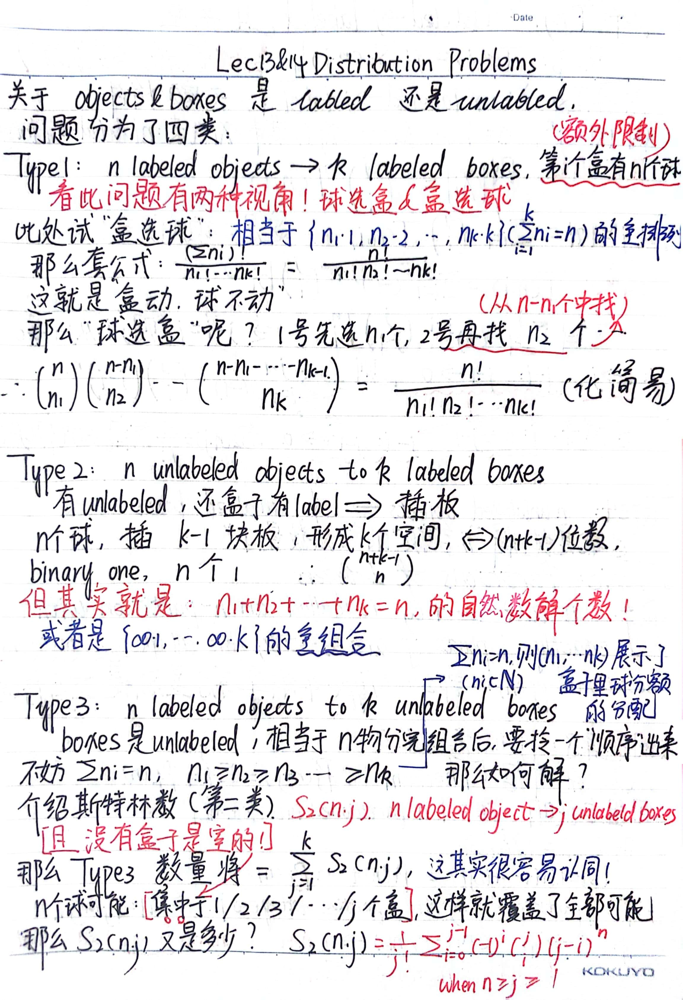
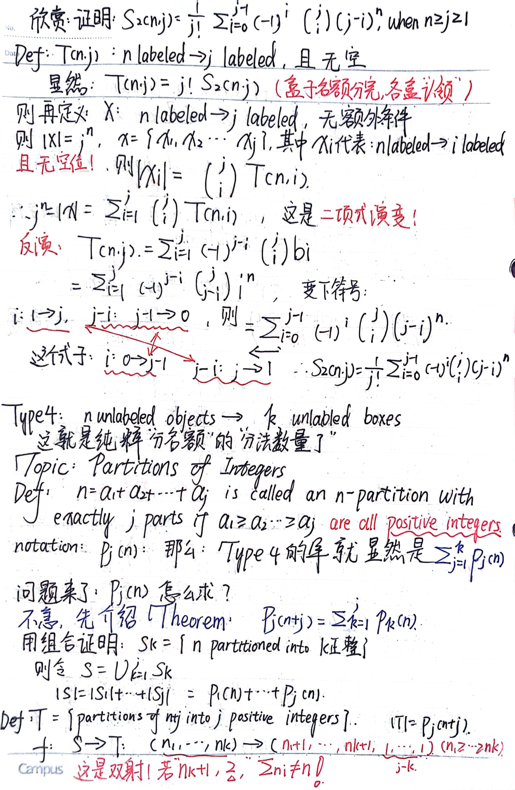
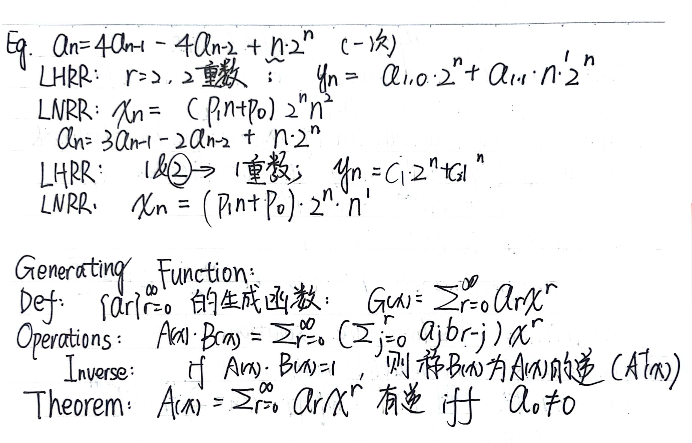
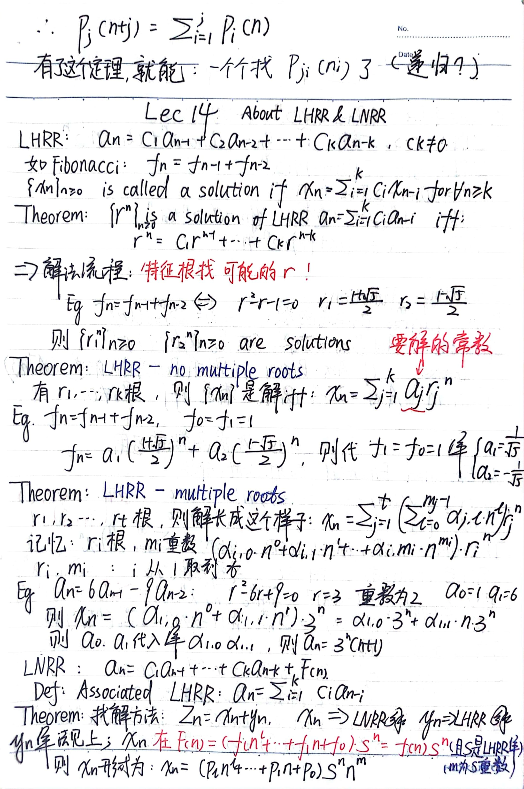

csrookie's website
Lec13&14
Initializing search
csrookie's website
Home
Deep Learning
Deep Learning
Partition One: Fundamental + Convolution
Partition Two: Sequence Model
Transformer
Machine Learning
Machine Learning
Datawhale
Course
Course
高等数学上
高等数学上
写在最前面
第一&二章 函数 极限与连续
第一&二章 函数 极限与连续
第一章证明总结
递推数列的极限
极限中的概念题
连续性 间断点 渐近线
夹逼准则求极限
求函数极限
极限与连续随笔
第三&四章 导数与微分 微分中值与导数应用
第三&四章 导数与微分 微分中值与导数应用
导数定义与概念专题
第二&三&四章好题
第五章 积分
第五章 积分
不定积分与定积分概念
不定积分专题
定积分定义求极限
反常积分敛散性
积分不等式
积分及其应用
积分的应用&函数形态
积分递推公式
手法&painpoint
第六章 微分方程
第六章 微分方程
微分方程
期末复习篇
一元积分学好题
高等数学下
高等数学下
第七章 向量空间与空间解析几何
第八章 多元函数的微分学
第八章 多元函数的微分学
多元函数
偏导数计算
已知偏导反求函数
全微分的判定与计算
隐函数存在定理
多元函数极值
第九章 重积分
第九章 重积分
二重积分
二重积分中值定理
二重积分好题
期中总结
高数好题上
第十章 曲线积分和曲面积分
第十章 曲线积分和曲面积分
曲线与曲面积分
曲线与曲面积分总结
曲线与曲面积分荟萃
第十一章 级数
第十一章 级数
无穷级数和判别法
无穷级数选择题与反例
幂函数
傅里叶级数
高数好题下
离散数学
离散数学
写在最前面
上半部分
上半部分
Lec1
Lec2&3
Lec4
Lec5
Lec6
Lec7
Lec8
Lec9
Lec10
Lec11
Lec12
Lec13&14
Lec15
随笔&好题
下半部分
下半部分
Lec1
Lec2
Lec3
Lec4
Lec5
Lec6
Lec7
Lec8
Lec9
Lec10
Lec11
Lec12
Lec13
Lec14
线性代数
线性代数
写在最前面
课堂笔记
行列式与伴随矩阵
手法与好题
章节回顾
总复习
数据结构与算法
数据结构与算法
基本结构与算法分析
AAAI2025
Lec13&14



